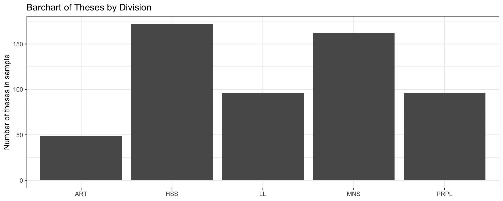
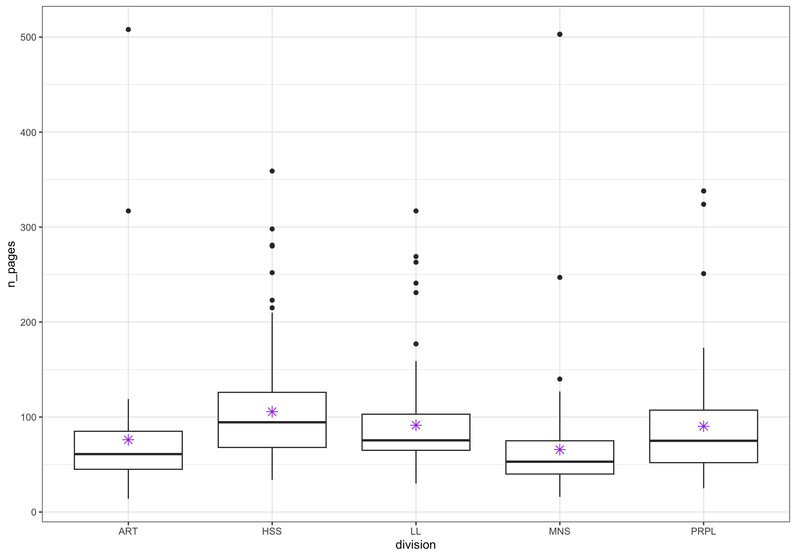
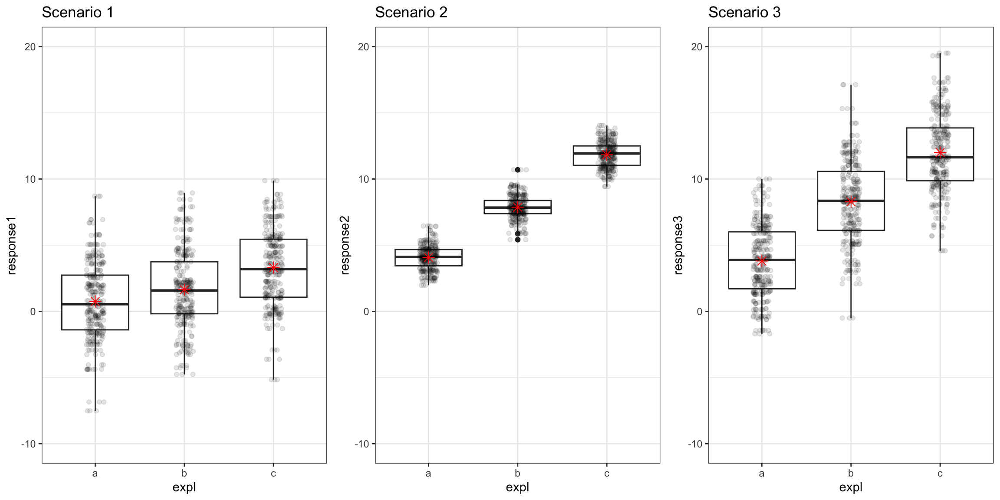
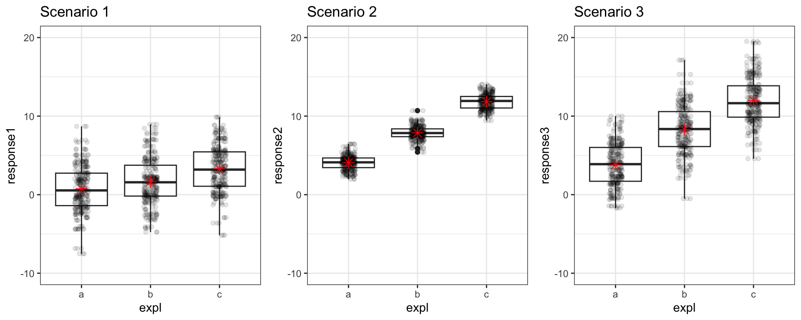
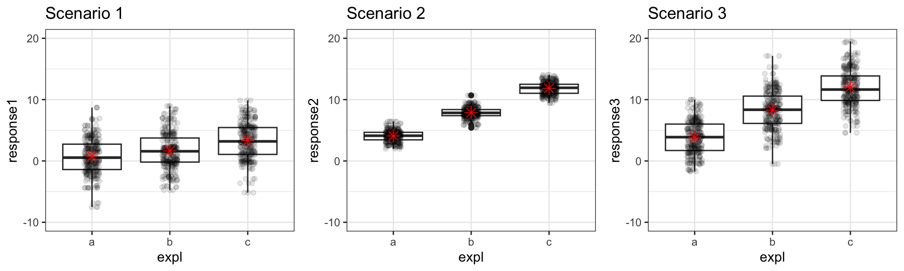
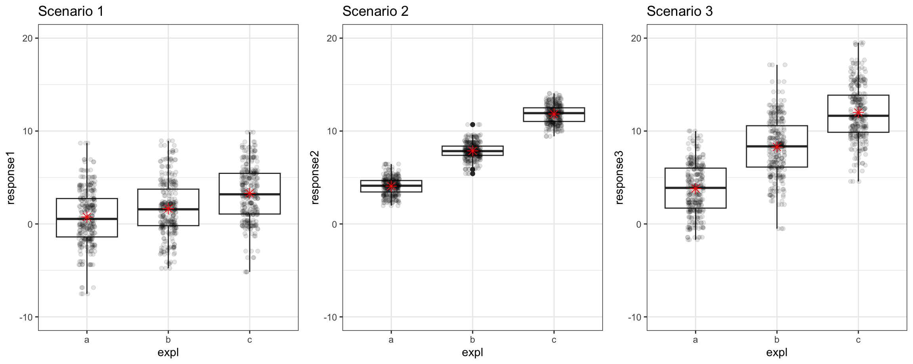
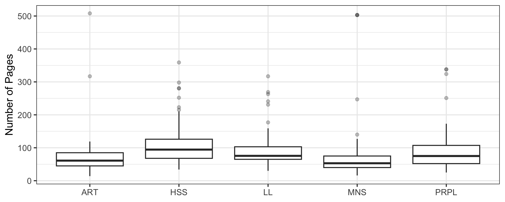
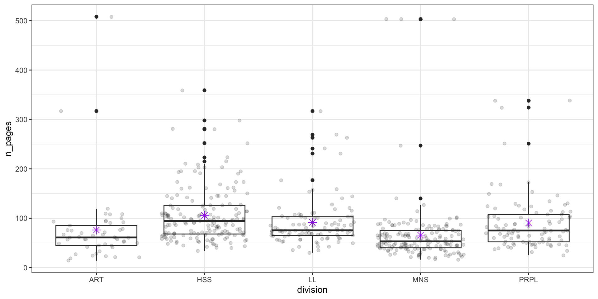

Inference for Regression III: ANOVA
Megan Ayers
Stat 141 | Fall 2026
Monday, Week 13
Goals for today
- Discuss inference for regression with categorical variables
- Introduce ANOVA
- Learn about the F distribution
- Connect back to the F-test for comparing nested models
Reed Theses
Do thesis lengths vary by division?
Cases:
Variables of interest (and type for each):
Hypotheses:
Helpful visualization to start with:
Example
Does there appear to be a relationship?

Recall: Regression with a Categorical Predictor
- We can build a linear model to predict Number of Pages (\(y\)) with Division (\(x\)) to assess this more formally.
- Q: How many coefficient estimates will we get?
# A tibble: 5 × 7
term estimate std_error statistic p_value lower_ci upper_ci
<chr> <dbl> <dbl> <dbl> <dbl> <dbl> <dbl>
1 intercept 76.1 8.57 8.88 0 59.2 92.9
2 division: HSS 29.6 9.71 3.04 0.002 10.5 48.6
3 division: LL 15.3 10.5 1.46 0.146 -5.36 36.0
4 division: MNS -10.3 9.78 -1.06 0.291 -29.6 8.87
5 division: PRPL 14.2 10.5 1.35 0.177 -6.47 34.9 Discuss with Neighbor(s):
What is the equation for the fitted model?
How should we interpret each coefficient? What do +/- coefficients imply?
Inference for Regression with a Categorical Predictor
# A tibble: 5 × 7
term estimate std_error statistic p_value lower_ci upper_ci
<chr> <dbl> <dbl> <dbl> <dbl> <dbl> <dbl>
1 intercept 76.1 8.57 8.88 0 59.2 92.9
2 division: HSS 29.6 9.71 3.04 0.002 10.5 48.6
3 division: LL 15.3 10.5 1.46 0.146 -5.36 36.0
4 division: MNS -10.3 9.78 -1.06 0.291 -29.6 8.87
5 division: PRPL 14.2 10.5 1.35 0.177 -6.47 34.9 Discuss with Neighbor(s):
Q: How should we interpret the confidence interval for
division:HSS?Q: What hypothesis tests are happening here?
- How are we mathematically defining and evaluating them?
- How do we interpret the results contextually?
Q: Are there other tests we might want to carry out instead?
Inference for Many Means
Inference for Many Means
Consider the general situation where:
Response variable: quantitative
Explanatory variable: categorical
We want to compare the average responses in the different categories
Parameter of interest: \(\mu_1 - \mu_2\)?
This parameter of interest only makes sense if the explanatory variable is restricted to two categories.
- Can use linear regression to assess individual means, but in the special case of categorical explanatory variables, we have another option.
- We can conduct inference for more than two means with one test!
Hypotheses
Consider the situation where:
Response variable: quantitative
Explanatory variable: categorical
\(H_0\): All group means are equal (ex. average thesis length is equal across division)
\(H_a\): At least one group mean is not equal to the rest (ex. thesis length is related in some way to division)
Discuss with neighbor(s)
How is this test similar to previous hypothesis tests?
How is this test different from previous hypothesis tests?
How would I write these hypotheses in terms of parameters, \(\beta_0,\beta_1,\dots\)?
Test Statistic
Need a test statistic!
Won’t be a single summary statistic.
Needs to measure the discrepancy between the observed sample and the sample we’d expect to see if \(H_0\) were true.
Would be nice if its null distribution could be approximated by a known probability model.
ANOVA
We’ll consider a test called “ANOVA”
Called “Analysis of VARIANCE” test.
Not called “Analysis of MEANS” test!
Question: Why analyze variability to test differences in means?
Why analyze variability to test differences in means?
Let’s look at some simulated data for a moment.

Question: For which scenario are you most convinced that the means are different?
Key Idea: Partitioning the Variability

\[\begin{align*} & \mbox{Total Variability} = \\ & \mbox{Variability Between Groups} + \\ & \mbox{Variability Within Groups} \end{align*}\]
- Variability Between Groups: How much the group means vary
- Compare the red dots.
- Variability Within Groups: How much observations within each group vary
- Within groups, compare the black dots to the red dot.
Key Idea: Partitioning the Variability
Total Variability: How much points vary from the overall mean
\[\begin{align*} \mbox{Total Variability} &= \sum_{i=1}^n (x_i - \bar{x})^2 \\ & = \mbox{Sum of Squares Total} \\ & = \mbox{SST} \end{align*}\]
- We can separate this into two pieces
Key Idea: Partitioning the Variability
- Variability Between Groups: How much the group means vary
- Compare the red dots.
\[\begin{align*} \mbox{Variability Between Groups} &= \sum_{k = 1}^K n_k (\bar{x}_k - \bar{x})^2 \\ & = \mbox{Sum of Squares Group} \\ & = \mbox{SSG} \end{align*}\]
Key Idea: Partitioning the Variability

- Variability Within Groups: How much natural group variability there is
- Within groups, compare the black dots to the red dot.
\[\begin{align*} \mbox{Variability Within Groups} &= \sum_{k = 1}^{K} \sum_{i = 1}^{n_k} (x_{ik} - \bar{x}_k)^2 \\ & = \mbox{Sum of Squares Error} \\ & = \mbox{SSE} \end{align*}\]
Mean Squares
\[\begin{align*} \mbox{Total Variability} & = \mbox{Variability Between Groups (SSG)} + \mbox{Variability Within Groups(SSE)} \end{align*}\]
Need to standardize the Sums of Squares to compare SSG to SSE.
\[\begin{align*} \mbox{Mean Variability Between Groups} & = \frac{\mbox{SSG}}{K - 1} = MSG \end{align*}\]
\[\begin{align*} \mbox{Mean Variability Within Groups} & = \frac{\mbox{SSE}}{n - K} = MSE \end{align*}\]
Now on a comparable scale!
Now we can create a test statistic that compares these two measures of variability.
Test Statistic
In some ways, MSG is the natural test statistic but as we saw for this example, MSG alone isn’t enough.

Scenarios 2 and 3 have roughly the same MSG but we are much more convinced that the means are different for 2 than 3.
That is where MSE comes in!
Test Statistic
\[ F = \frac{\mbox{MSG}}{\mbox{MSE}} = \frac{\mbox{variance between groups}}{\mbox{variance within groups}} \]
If \(H_0\) is true, then \(F\) should be roughly equal to what?
If \(H_a\) is true, then \(F\) should be greater than 1 because there is more variation in the group means than we’d expect if the population means are all equal.
Returning to the Thesis Length Example
# A tibble: 5 × 7
term estimate std_error statistic p_value lower_ci upper_ci
<chr> <dbl> <dbl> <dbl> <dbl> <dbl> <dbl>
1 intercept 76.1 8.57 8.88 0 59.2 92.9
2 division: HSS 29.6 9.71 3.04 0.002 10.5 48.6
3 division: LL 15.3 10.5 1.46 0.146 -5.36 36.0
4 division: MNS -10.3 9.78 -1.06 0.291 -29.6 8.87
5 division: PRPL 14.2 10.5 1.35 0.177 -6.47 34.9 - Is 9.85 a large test statistic? Is a test statistic of 9.85 unusual under \(H_0\)?
The F-distribution and F-Test
- It so happens that this test statistic follows what is called an F-distribution
- The ratio of independent scaled chi-squared distributions (which are sums of squared Normal distributions)
- Don’t memorize!

Conditions for ANOVA
We can safely use ANOVA for this type of hypothesis test if we have:
- Independence of observations
- At least 30 observations in each group (rule of thumb), or the response variable is normal
- Similar variability for all groups
The ANOVA Test
Check assumptions!
# A tibble: 5 × 3
division `n()` `sd(n_pages)`
<chr> <int> <dbl>
1 ART 49 77.4
2 HSS 172 54.3
3 LL 96 50.0
4 MNS 162 66.2
5 PRPL 96 57.8- Rule of thumb:
- Take the ratio of the smallest and largest variances
- Concern if it is smaller than 0.5 or larger than 2
The ANOVA Test
Check assumptions!
ANOVA learning check
Thinking of your future self studying for the final exam, write down 1-2 sentences briefly explaining what ANOVA is (at a high level) and why we use it.

Many ANOVA Tests Out There!
We learned the One-Way ANOVA test.
Two-Way: Have two categorical, explanatory variables and one quantitative response.
Repeated Measures ANOVA: Have multiple observations on each case.
- All the tests we have focused on assumed independent observations.
- ANOVA Tests for Regression: Allow comparisons of various subsets of a multiple linear regression model
- Remember our hypothesis tests about nested models last class! This comparison involves an F-Test too.
\[ \begin{aligned} H_0:& \text{ The small model is sufficient at explaining Y}\\ H_a:& \text{ The large model is superior to the small at explaining Y}\\ \end{aligned} \]
Next time:
- Model selection activity - bring your laptop or tablet!